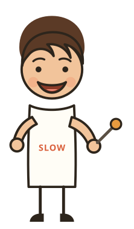
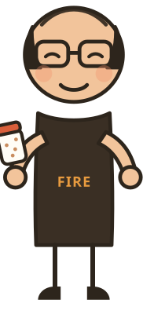
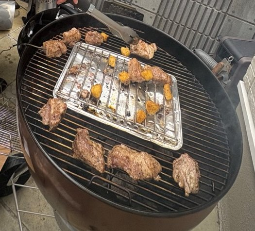
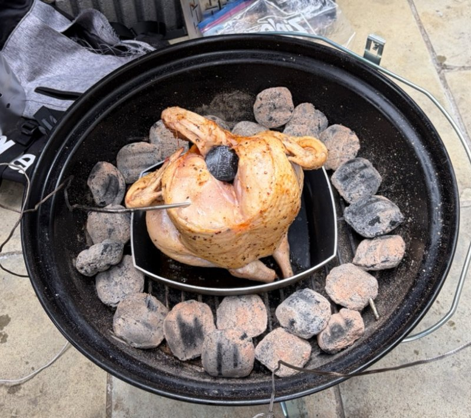
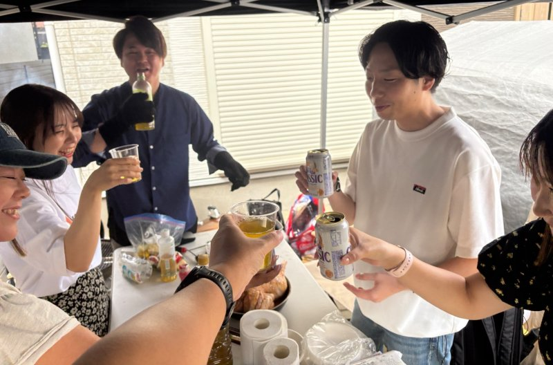

ハニーマスタードで、ラブ以外の武器が増えた日
10月4日（日）、月1バーベキューの第3回を世田谷の某所でやりました。うえたくとやまちゃんが焼き、ゲストのみなさんと一緒に囲みました。作ったのは、写真と振り返りで確認できただけで11品。前回ヨッシーに教わったハニーマスタードのチキンに、柚子胡椒・味噌・塩麹の下味、ゲストが炊いたご飯まで、ラブ以外の味をいろいろ試した1日でした。

1ハニーマスタードの鶏が、最近いちばんの味になった
前回の名古屋でヨッシーに教わったハニーマスタードのチキンを、今回はやまちゃんが自分で仕込みました。結果は「最近のメニューの中で一番美味しいくらい」。
前日、ヨッシーに教わりながら、やまちゃんが自分で仕込みました。
これまでの鶏は、ラブで焼くとどうしてもしょっぱい味に寄っていました。そこにハニーマスタードが来て「本当に美味しい」。ゲストの感想でも、お肉の中でいちばん好きと言ってもらえた味です。
やまちゃんにとっては、ラブ以外の武器が増えたことで、BBQで楽しめる範囲が広がった感覚があったそうです。今回は鶏でしたが、豚にも合いそうだし、牛にかけたらどうなるのか、というワクワクも残りました。
2柚子胡椒・味噌・塩麹で、ラブ以外の味を探した
ハニーマスタードがハマるなら、他にもハマるものがあるはず。そう考えて、豚ウデ肉に柚子胡椒＋はちみつ、味噌、塩麹の3つの下味を試しました。
結論は「すごく良かった」。ハニーマスタードほどのインパクトはなかったものの、これまで体感できなかったBBQの味にたどり着けました。ラブに頼っていたところで別の味付けを試せたこと自体が、今回の収穫です。
一方で、3つとも「イメージできる味」に落ち着いてしまった、というのがやまちゃんの反省点。そこで改めて話に出たのが、あんちゃんが持っているオーストラリアの青と緑のラブです。うえたくとも「あれはやっぱりものすごく美味しいし、破壊力がある」と話していました。
スペアリブも「めちゃくちゃ美味かった」とうえたく。ただ、どうやって味付けしたのかは、うえたくにも謎のままです。


3丸鶏は少し食べたら、残りはお土産に回す
丸鶏はやっぱり盛り上がるし、美味しい。でも大きいぶん、出てくる頃にはみんなお腹いっぱい。そこで、少し食べたら残りはお土産に回す、という案が出ました。
言い出したのはうえたく。感想でも「丸鶏の提供量と、即座にお持ち帰りに回してしまうオペレーション」を挙げていました。10人くらいで囲むなら食べきれるかもしれませんが、少人数だと難しい。丸鶏を切り上げて、次の料理に移ったほうがそれぞれ良い、というのがやまちゃんの受け止めです。
丸鶏とサーモンは、開催の前々日に買って冷凍しておきました。うえたくいわく、それでもクオリティは問題なし。杉板のサーモンは、ゲストからも「安定のうまさ」と言ってもらえました。

4ご飯はゲストが炊いて、焼き手と食べる人が一体になった
前回、あんちゃんに教わったタイガーの「魔法のかまどごはん」。今回は来てくれたゲストに炊いてもらいました。
やまちゃんは前日に家で一度炊いてみて「うまく炊けた！」。そのうえで当日はゲストに任せました。炊いてくれた方は「うまく炊けなかったらコンビニでサトウのごはんを買ってきます」と言うくらい、責任感を持ってやってくれたそうです。
参加している人が作る体験をしてくれることが、やまちゃんには何より嬉しかったとのこと。焼き手と食べる人が分かれるのではなく、一体となってできた感覚があった、と振り返っています。そしてシンプルに美味しい。
うえたくの感想にも「洗い物やってもらえるのはめちゃくちゃ助かる」「1人より2人の方が焼いてて楽しい」とありました。
5野菜も焼いて、締めはクアトロフォルマッジ×はちみつ
大根や野菜のグリルも焼いて、最後は最近なかなかたどり着けなかったクアトロフォルマッジ。うえたくが焼いて、はちみつをかけて食べたら、参加者みんなが食べられました。
大根は、前回あんちゃんに教わったものに挑戦しました。ゲストからは「おでんみたい」と言ってもらえた一方、うえたくは「大根はあんちゃんのレベルが違いすぎる」と、次への宿題にしていました。
ピザはお腹にたまりやすく、出すタイミングが難しい料理です。それでもあのタイミングで出したクアトロフォルマッジ×はちみつは「すごく良い」とやまちゃん。
一緒にひとつの料理を作ったり、BBQの話をしたりしながら、ゆったり過ごせた1日でした。終わったあとに、うえたくとまったりしていた時間も最高だったそうです。

参加者の声
鮭は安定のうまさ！炊飯器はじめて、新聞紙で炊けるのすごい。大根はじめて、おでんみたい。お肉はハニーマスタード味が1番すき。くーも楽しそうだった！
ぐちさんサーモンもお野菜も丸鶏もスペアリブもじゃがいももピザも何もかも美味しくて幸せな時間でした！！味付けやスパイスのこともたくさん知ることができたので、今後のBBQにも活かしていきたいです。
いしまるさん